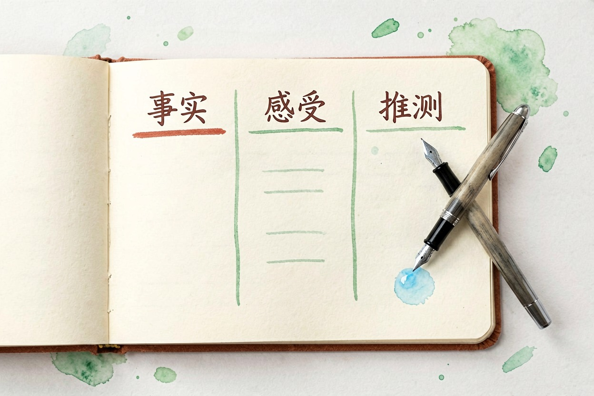
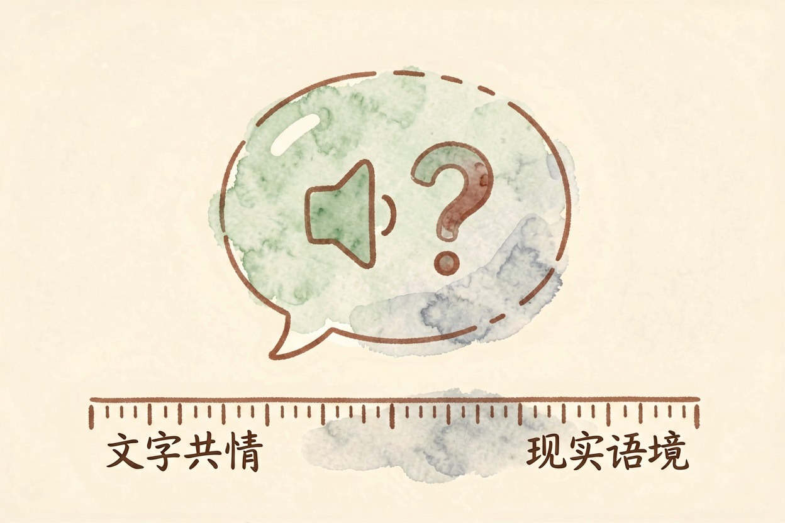
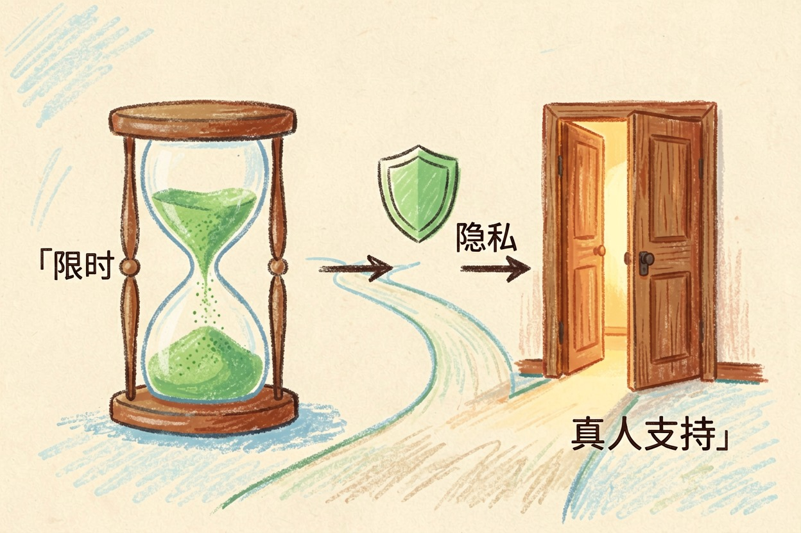
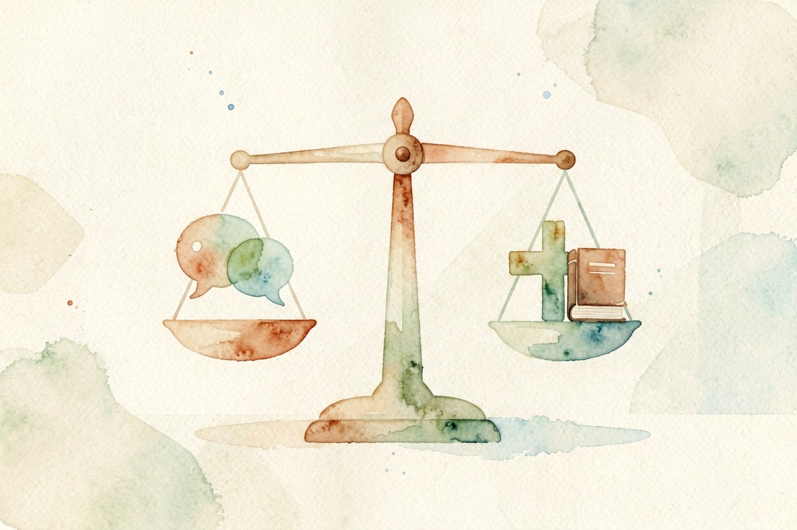

AI 心理疏导靠谱吗？能帮什么别指望什么 — Learntide
深夜情绪上头时，有个不会打断你的对话框确实管用，但它接得住倾诉，接不住风险。
AI 心理疏导靠谱吗：先把话讲清楚

AI 心理疏导靠谱吗，答案取决于你把它放在哪个位置。当成随时能说话的出口，它称职。当成心理治疗的替代品，它不合格。
这两件事之间隔着专业资质、诊断能力和责任承担，差距不是模型能力能补上的。
它最大的长处是没有门槛。凌晨三点、情绪最难看的时候，它都在，也不会嫌你烦。
情绪梳理提示词
我现在情绪不太好，请先不要给建议。
1 听我说完，用你的话复述一遍我的处境
2 帮我把情绪命名，比如委屈、焦虑还是愤怒
3 列出我提到的事实和我的推测，分成两栏
4 最后问我一个问题，帮我想下一步它确实能帮上忙的三件事

第一件是把情绪说出口。很多难受来自堵着，打出来的过程本身就在降温。
第二件是整理。你嘴里的一团乱麻，它能拆成事实、感受、担心三层。看清楚了，事情往往没那么吓人。
第三件是记录。每天写两句心情，过一个月回看，你会发现自己的情绪有规律，跟睡眠和工作强度绑得很紧。
还有个附带好处。练习怎么跟人开口，可以先在这里排练一遍。
有一点常被低估：它不会把你的话转述给共同的朋友，说完不用担心第二天全组都知道。
它做不了的事

它做不了诊断。抑郁、焦虑症这类判断需要面谈、量表和病史，聊天记录不够。
它也开不了任何药。任何关于用药、加量、停药的说法，都不要听它的。
它读不懂你的语气和沉默。真人咨询师能从停顿里察觉不对劲，文字对话看不到这些。
它还容易顺着你说。你说自己一无是处，它可能先共情，不一定敢反驳。长期这样，会加固你原有的想法。
对具体处境它也不敏感。家里的人情往来、单位里的规矩，这些背景它只能靠猜。
什么情况必须找真人
出现伤害自己的念头，立刻找人。家人、朋友、学校老师、当地心理援助热线，哪个先接通就找哪个。
连续两周以上睡不着、吃不下、什么都提不起劲，去正规医院的精神心理科看看。
涉及家暴、校园霸凌、职场侵害这些具体处境，需要的是现实中的干预和证据，不是聊天。
未成年人尤其别把这件事全交给一个应用。告诉一个信得过的成年人，是更要紧的一步。
费用这块也说一句。真人咨询确实贵，但不少城市有公益热线，学校和单位常有免费名额，先去问。
怎么用才不伤自己
给自己定个时长。聊二十分钟就停，别把它变成新的沉溺方式。
隐私要看清。真名、单位、住址这些别往里填，很多应用会保存记录用于改进。
把它当第一站，不当终点站。它帮你把话理顺，理顺之后该找人还是要找人。
说到底，AI 心理疏导靠谱吗，得看你是拿它当拐杖还是当医生。当拐杖，它扶得住你一段路。

本文信息核对于 2026-08-08。AI 产品的价格、免费额度与功能变动频繁，实际以各工具官网当前说明为准。